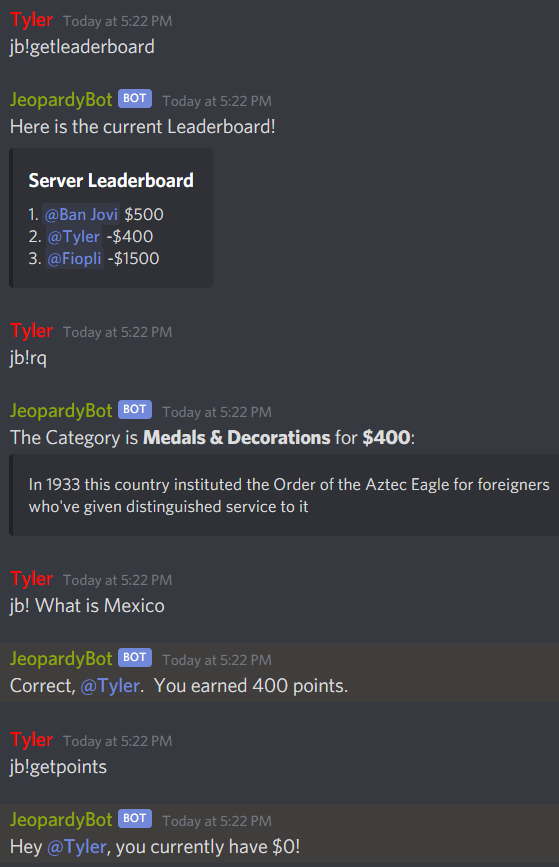

A Discord bot that plays Jeopardy
This project was my senior Computer Science Capstone project. I chose this project because I wanted learn Javascript and how to work with Asynchronous and Synchronous data. I created a command to allow the user to request a question from the bot. Once requested the bot needed to wait on calls to the jService API in order to pull down the data needed to display Jeopardy questions in a Discord server. Doing this Synchronously would mean the bot would be unable to perform any other function while waiting for the data so using a promise to make the call to the API Asynchronous allows the bot to be able to still respond with help if a user requests help.
Once I was able to get the question and its corresponding properites from jService I needed to keep track of the users point value from answering questions correctly and incorrectly. To accomplish this I used SQLite to create a Table for the Discord Servers users that stores their current point total once they have responded to a question. This allowed me to be able to add a command that lets a user retrive their current point total from the table as well as a point leaderboard command for that discord server. This was a fun project that added new skills that I can use on future projects. 